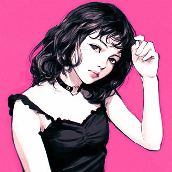
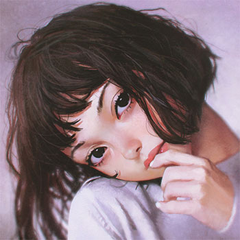
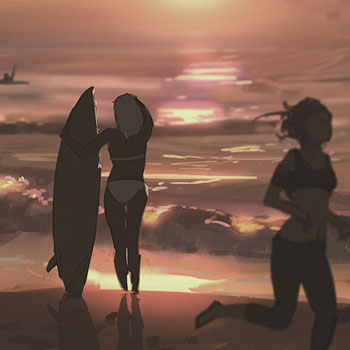
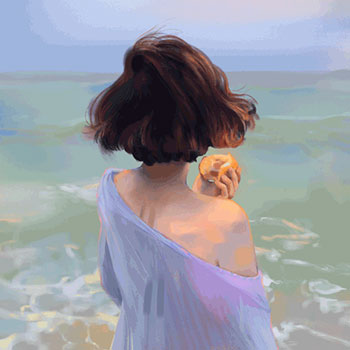
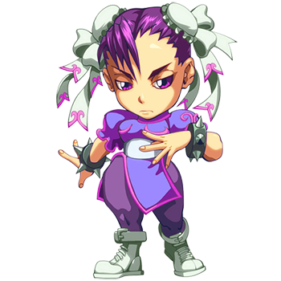

CSS filter属性效果演示
CSS filter demo
jQuery之家
返回下载页
各种CSS滤镜
box-shadow和drop-shadow的比较
blur() - 模糊滤镜
brightness() - 明亮度滤镜
contrast() - 对比度滤镜
grayscale() - 灰度滤镜
hue-rotate() - 色相旋转滤镜

invert() - 颜色反转滤镜
opacity() - 透明度滤镜

saturate() - 饱和度滤镜

sepia() - sepia滤镜

drop-shadow() - 阴影滤镜

url() - url滤镜